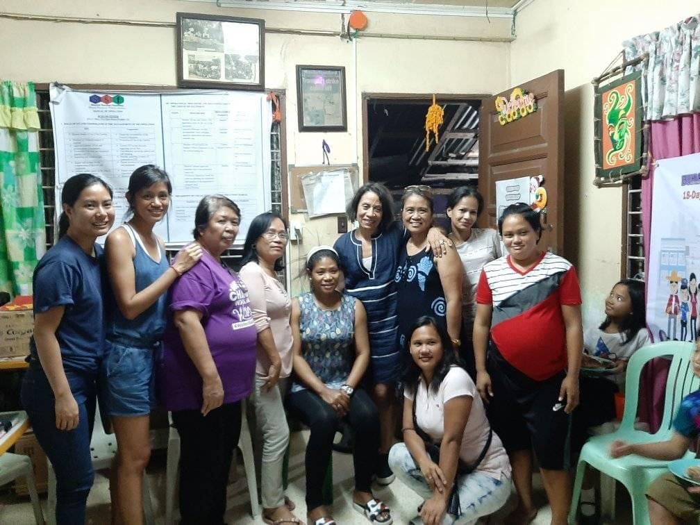
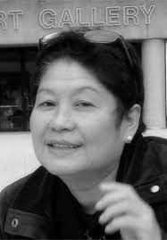
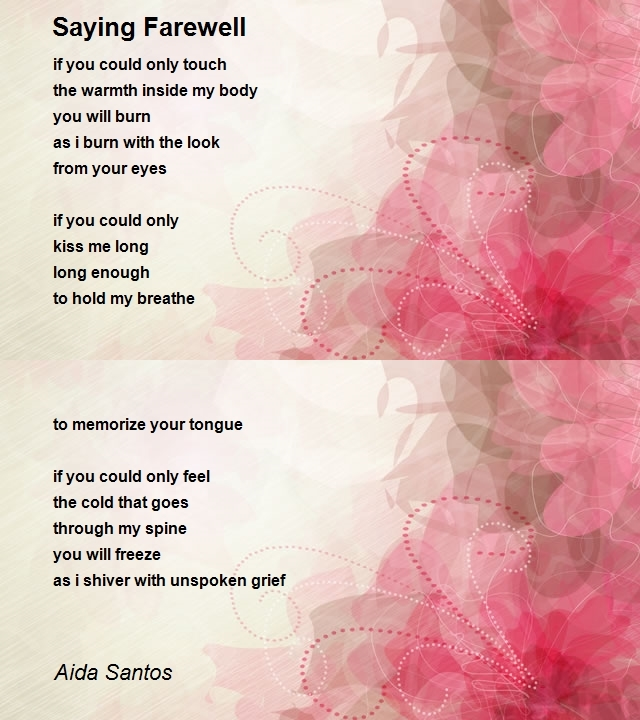
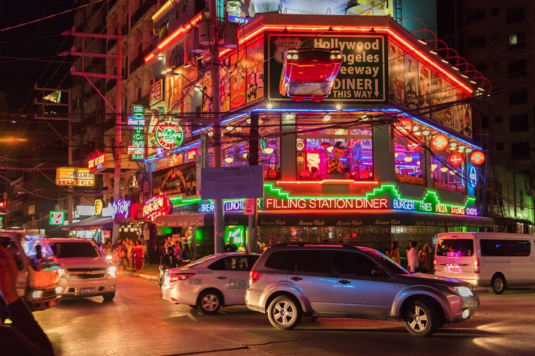
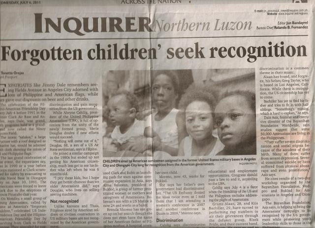

In 1984 Alma worked at a bar in the Philippines which led her to meet a missionary
who was organizing the women who worked in the local bars. They then began to open
up a dialogue about the women's experiences of violence that was happening within
the bars. She was then a catalyst in helping found the Buklod center in Olongapo
which was a center dedicated to supporting the women working in the bars. Buklod
was established in 1987 where she was a founding member. The center has evolved
into a continued learning and education for women working in the bars which focused
on their rights as women and as workers. It was meant to empower the women and
provide them with more agency. An immediate educational program was put in place
to discuss the transmission of sexually transmitted diseases. One of the long term
initiatives has been offering educational programs for those who were not able to
finish schooling. Since being involved in the organization, she became one of the
head organizers (1988) and has since been the executive director of Buklod (2000).
In 1992-1995 Buklod focused on enabling women to be able to earn income through
different skill training and livelihood programs. Examples of the skill training
programs include sewing, wood processing, neighborhood store operation (such as a
lunch hall for local works, and laundry services. The aim was to shift the work
away from the bars.
Their international involvement in feminism has included participation in conferences,
cross borders networking as well as different hearings that pertain to problems women
face internationally. Through Buklod Alma and her colleagues are able to share their
experiences internationally and eventually contribute their experiences to actions
such as policy changes surrounding the protection of women. Buklod is an organization
of survivors which further emphasizes the need for their stories to be heard both
locally and internationally.
Through Buklod, women have learned to be careful and mindful of their safety as well as
emotional coping strategies. Buklod likes to support women with survival skills because
many of them are not disposed to working in the bars anymore. Some have started new
businesses for example.
Most of the women at Buklod (~80%) have been sexually abused or experienced some form of
domestic violence. Most of the time they are abused by family, friends, their partner,
or they were abandoned. A lot of the time they lack the completion of their education.
Buklod has responded to this by adopting a program called the Alternative Learning System
(ALS). If they pass the exam from this program it allows them to go directly to college.
ALS is recognized by the Philippino department of education. The program is still going
strong, even through the pandemic. Buklod has successfully sent four women to college and
high school through their program.

Alma with several members of Buklod (she is third from the right of the standing figures, and has glasses on her head)
Aida Santos became involved in activism during her university years starting in 1968. She
became even more involved during the height of activism in the Philippines throughout the
70s. She explains how it was "impossible not to be affected by the politics of the era."
She was engaged in a series of strikes and demonstrations at the university protesting the
dictatorship of the Marcos Regime. One of the issues was the lack of financial support and
subsidies the government was providing to the farmers who were struggling monetarily.
Several of the rural workers were migrating to the city because of the inability to achieve
their livelihoods and she was witnessing this. In the year of 1970 several protestors were
imprisoned for their activism which started a wheel of injustice. The military wanted to
enter the university she was attending even though it was a contradiction to the constitution
of the school.
One of the ways she engaged in the activism during this period was helping workers in the
city write documents for a multitude of reasons. She stayed with a union group to help them
work out different aspects of their organization and secure more rights for them. She was
also involved in a political cell within a big group of writers. She was a student of
literature which allowed her to support several groups with writing and documenting. Arts
and culture were central mediums through which she protested against the regime.
In 1972 the university was closed and there were even more arrests of protestors and students.
Aida then went underground to join the national democratic movement to escape the military.
Her boyfriend at the time was on a crackdown list of people who were going to get arrested.
She was 21 at the time.
One of the many issues Aida has sought to improve is the situation of housing within the
Philippines. There was a housing plan approved by the government, dispute the fact that there
were no funds allocated to fulfill the plans. Various organizations were contacted on her
behalf to plead for financial support. Women were not the priority but infrastructure was the
priority in the eyes of the government. The government did not do anything which led to
warranted frustration of the women. Aida felt a moral obligation to address the concerns.
She then started organizations that directly engaged with the women because it is impossible
to make plans with and for the women without organizing with them. Being with them and
planning their future was crucial to this process.
Aida has also been involved in activism regarding Amerasian children and has had a lifelong
engagement for the situation. But for more information on this please refer to the Amerasian
tab within the website. She has also had a lifelong engagement with activism for women in
prostitution. She has had a very inclusive approach in trying to support the women and include
them in the organization of improving the situation. After conducting several interviews with
the women she published a book Raw Voices of Women on the Street.
Aida is an award winning poet who has published over 100 books, poetry anthologies, and articles.
She also has worked with a number of organizations including the International Labour Organization
(ILO), UNICEF, UNFPA, the World Bank, USAID, the Asia Foundation/PACAP, & OXFAM.

Aida Santos

Saying Farewell, a poem by Aida Santos
Clark Air Base, located in Angeles, and the Subic Bay Navy Base, located in Olongapo, were the two major
hubs of US military presence in the Philippines from World War 2 until their closing in the early 1990s.
During this time, there were troops that lived there and many that visited, especially following the end
of the Vietnam War. In the late 80s it was normal for carriers with 10,000+ soldiers to arrive for
recreational time, which in Olongapo was spent mostly in the approximately 500 bars in the city. These
bars were designed to draw the attention of soldiers as they were a large driver of the local economy.
One problem that arose quickly was that soldiers would often bring with them dangerous STD's like HIV/AIDS
and spread them to women in prostitution, many of which had no education on the subject, creating an
extremely dangerous environment for women in the bars.
Our activists estimated that during the late 80's there were around 16,000 women involved in prostitution,
which was usually facilitated through the bars. While prostitution was illegal, there was a registration
process that allowed women working in bars access to some STD testing resources. If they ever tested
positive they were quickly cast out of whatever bar they worked in, meaning there were extra layers of
danger for women who contracted diseases from the soldiers. In the late 80's roughly 6,000 women were
registered and worked in the bars, while 10,000 were unregistered and typically worked in the street,
sometimes selling products like peanuts, flowers or cigarettes in places that soldiers typically walked
through. This was a more profitable place for women in prostitution to operate because they didn't have
to give any manager a cut of their earned cash like the women in the bars did. Some unregistered women
were vendors for flowers, peanuts, cigarettes etc near where soldiers would go they would pick up
"customers" there. This was more popular or preferable because it was more freelance and they didn't
have to give any manager a cut of their earned cash.
During this time, the bulk of the work that organizations like Buklod focused on support for the women
in prostitution in the forms of organizing and providing STD education and support to the women. When
the bases closed in 1992, there was a massive shift in the economies of cities like Olongapo and Angeles,
which were economically dependent on the bases. There was much less demand for women in bars, which
Buklod took as an opportunity to engage women in skill training in subjects such as sewing, wood
processing and operation of local stores and lunch halls. These programs were ultimately successful in
providing many women with the chance to provide for themselves and their families in much safer ways.
While the bases may be gone, many of the same issues remain. There is no modern data on STD's in the
Philippines but they are still rampant in many areas and one of the consequences of the bases closing
was that the government stopped STD testing women in bars, making things more dangerous for women still
in prostitution. And while the number of bars has decreased since the bases closing, the 1999 visiting
forces agreement between the US and the Philippines means that soldiers still come into the cities to
this day, continuing the issues with STD's, Amerasian populations and other problems faced by local
women in prostitution. As issues change and develop so has the activism of women's organizations, and
issues like the current pandemic have provided new challenging obstacles for activists in the Philippines.
Now more than ever support and recognition from the international community is necessary to aid the women
of the Philippines.

A bar in Manila that has many references to culture from the United States
One of the long lasting impacts of US Militarization in the Philippines is the generation of
Philippine-American children born as a result of US soldiers impregnating women in prostitution. After the
bases closed in 1992, all of the fathers in the military left, creating a vacuum of uncertainty for the
unrecognized children of these soldiers. Originally these people were called the Amerasian children, but
now, 29 years after the closing of the bases, many of these people are adults with children of their own.
Amerasians in the Philippines deal with a number of issues in cities like Olongapo. They are discriminated
against (especially those with black fathers), often live in poverty, have trouble accessing even a basic
education and are almost entirely unacknowledged by the United States Government.
In 1993 there was a press conference in Manila organized by numerous NGOs including Buklod that led to the
filing of a class action lawsuit in San Francisco that sought to provide 30,000 Amerasian children with
financial assistance in order to get them food, housing and education. This would have provided ample
opportunity for Amerasian children, but the case was dismissed on the grounds that the soldiers impregnated
women during recreation shore leave time and thus it was their personal responsibility, not the US Government's.
While the case being dismissed was disheartening, it did not slow down the tireless activism from Women's
organizations to take care of Amerasians. One of the more successful initiatives for Amerasians was the
opening of theatre and fashion show programs that gave Amerasians a safe space to share their emotions and
connect with one another. But while there has been success in organizing locally there is still a strong
need for education, financial support for living necessities, and American citizenship for all Amerasians.
The US has yet to acknowledge its responsibility towards the Amerasians, but nevertheless justice must be
sought until it comes.

A headline in a Newspaper about Amerasian children in the Philippines.
One of the most pressing issues in relation to the environmental impact of the US military bases on the
local communities is toxic waste contamination. Only after the bases left was the issue of toxic waste
discovered within the bases. There were over 3000 workers in a ship repair facility who were diagnosed
with fatal health conditions because of their exposure to toxic waste chemicals and asbestos.
Unfortunately, most of them have died.
The issue of environmental damage among the locals is an issue that has been known, but only confirmed
after the military's departure because they tried to keep it secret while operating there. Once the
bases started to pack up and leave there were already studies emerging about the impact of their
contamination. For example, there was contamination of villages upon villages where the water systems
had an abundance of unhealthy chemicals present in the aqueduct infrastructure. Mothers were addressing
the situation of the unhealthy environment because of how it was affecting their children. Aida explained
how when she visited these areas she observed "when they were dislocated or moved out of the contaminated
areas they didn't know where they would settle." Ships that were docked in Olongapo were storing nuclear
warheads and thus constantly bringing these chemicals in and out of the community.
It is also incredibly important to recognize how most of the lands that were decimated by the military
presence were on ancestral soil. These were places where indigenous people lived and earned their livelihood
for centuries. The US military forces began expanding their land usage further into the ancestral soil to make
room for different training exercises. Deforestation took place in order to create more space for training exercises.
Although Aida and Alma have spent years trying to campaign for the US military to take some form of
accountability for the environmental damage they have done, nothing has happened.
Subic Bay Naval base, one of the sites of pollution by U.S. Military
The COVID-19 Pandemic both created and exacerbated issues facing women in the Philippines. The shutdown of clubs,
outdoor street vending and restaurants as well as the lack of tourism meant that many women lost their jobs and
source of income. The inability for family breadwinners to go out and work has created intense economic strain
across the Philippines. Strict quarantines also meant that between 8PM and 5AM nobody is allowed outside of their
homes, which limits not only work opportunities but also important errands such as buying groceries or other supplies.
The lack of mobility has also created other issues for women and their families in the Philippines. Prolonged time
cooped up with family has led to increases in domestic violence and sexual violence, especially during the peak
lockdown times in April-June 2020. There are also issues with children and schooling, which has become significantly
more difficult given the lockdowns. Children spend much more time online and are hard to monitor, which has the
potential to expose them to inappropriate content without an easy way to stop it. Another obstacle the pandemic has
created is the need for space to isolate people, which can be hard to come by in densely populated cities.
Overall, the circumstances of the pandemic have created immense financial problems and limited mobility for women
in the Philippines. Organizations like Buklod have begun meeting over zoom and while there has been some support
from the international community in the form of laptops donated from Australia, there is still dire need for
support from the international community.
Large Scale United States military involvement in the Philippines began during the Spanish-American war.
After the Americans won the war Spain ceded the Philippines to the United States in the treaty of Paris in
december of 1898. The decision to continue the Spanish colonization of the Philippines was a controversial
one within the US, however many Filipinos had already made up their mind as to how they felt about a shift
in colonial leadership. Filipinos were not keen on the idea of simply being transferred to another colonial
overlord and promptly revolted resulting in the Philippine-American war. The Americans committed a number of
atrocities during the war including torture, the burning of villages and killing of civilians including
children. Following the US's victory in the war they formally colonized the Philippines for a period of 48
years.
In 1941 shortly after the bombing of Pearl Harbor the imperial Japanese army invaded the Philippines. Japan was
eventually beaten back by a combination of Filipino Guerilla fighters and the US military and after the war in
1946 the Philippines finally declared independence after centuries of colonial rule. However, despite its
newfound independence this did not mean the Philippines was free of US military presence entirely. The United
States continued to operate Clark Air Base and The US Naval Subic base in the Philippines both of which were
the two largest American Military installations outside of US territory for a time. Both of the bases also
served as staging grounds for the Vietnam war and saw a large amount of traffic in that time frame. Starting in
1989 and lasting until 1992 the US entered negotiations to maintain the bases on the Island, but these
negotiations fell through and the bases ceased operation on the Island.
In the current day while the bases may be gone the American Military is not. Due to the visiting forces
agreement large numbers of American military personnel still visit the islands. We spoke to a former US Navy
member who was stationed in the Philippines at one point and he felt strongly that the United States military
was doing more harm than good there. He referred to the United States as "a destructive force" abroad and felt
as though the armed forces' conduct did nothing to strengthen our alliances. Instead he noted how the flippant
and destructive conduct of the military actively harmed other countries' perception of the US as it largely
had a negative impact on locals.
Joint partnership between US and Phillipine forces.Subic Navy Base in Olongapo, Philippines

.png)
.png)
.png)
.png)